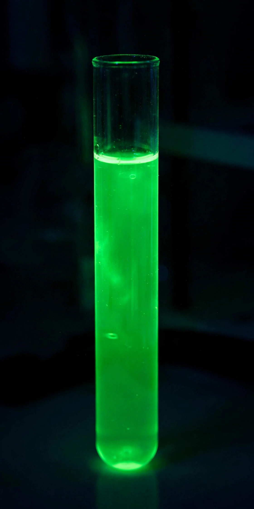

From Wikipedia, the free encyclopedia
| GFP | |
|---|---|
 Purified GFP fluorescing under UV light | |
| Full name | Green fluorescent protein |
| Source organism | Aequorea victoria (crystal jelly) |
GFP most commonly refers to the green fluorescent protein, a protein first isolated from the jellyfish Aequorea victoria that exhibits bright green fluorescence when exposed to blue or ultraviolet light. Since the 1990s GFP and its engineered colour variants have become among the most widely used reporter molecules in molecular and cell biology, and its development was recognised by the 2008 Nobel Prize in Chemistry.
This page is a short signpost article. For the protein — its discovery, structure, chromophore chemistry and applications — see the main article: Green fluorescent protein.